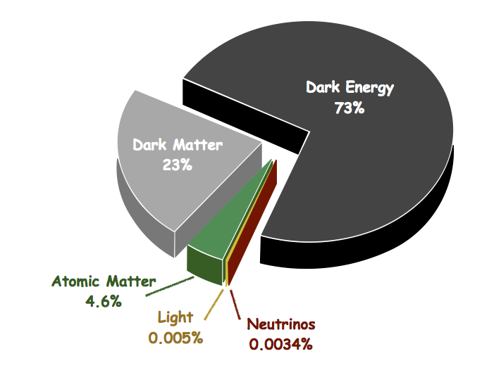
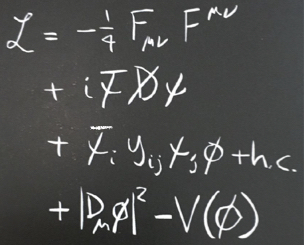

The main part of my research activity is devoted to the study the Higgs, electroweak and flavor dynamics in the Standard Model of Particle Physics and its extensions. My interests range from the theoretical analysis of new-physics theories, to more phenomenological subjects oriented to collider experiments and cosmology.
I wrote several papers on beyond-the-Standard-Model theories, with particular focus on scenarios with new strongly coupled dynamics (composite Higgs models). In this context, one of my key achievements is the identification of a strong correlation among the Higgs mass, the presence of light top partners and the amount of tuning needed for a realistic electroweak symmetry breaking [1,2]. These results have fundamental experimental consequences, since they single out the top partners as a privileged way to directly test a large class of composite Higgs models at colliders. Another important result I obtained is the development of the effective field theory formalism for parametrizing the phenomenology of the top partners [3]. This framework is now used by the ATLAS and CMS collaborations to report the LHC measurements on single production of new vector-like quarks.
I also have a strong research record in Standard-Model studies and model-independent tests of new physics. In this area, two of my key results are the analysis of the Higgs self-couplings at present and future colliders [4] and the exploitation of di-lepton Drell-Yan production [5] and di-boson processes [6] at the LHC as a way to improve the determination of the precision electroweak observables. At present I am also interested in machine learning applications for the analysis of experimental data.
[1] O. Matsedonskyi, G. Panico and A. Wulzer, “Light Top Partners for a Light Composite Higgs”, JHEP 1301 (2013) 164 [arXiv:1204.6333 [hep-ph]].
[2] G. Panico, M. Redi, A. Tesi and A. Wulzer, “On the Tuning and the Mass of the Composite Higgs”, JHEP 1303 (2013) 051 [arXiv:1210.7114 [hep-ph]].
[3] O. Matsedonskyi, G. Panico and A. Wulzer, “On the Interpretation of Top Partners Searches”, JHEP 1412 (2014) 097 [arXiv:1409.0100 [hep-ph]].
[4] A. Azatov, R. Contino, G. Panico and M. Son, “Effective field theory analysis of double Higgs boson production via gluon fusion”, Phys. Rev. D 92 (2015) no.3, 035001 [arXiv:1502.00539 [hep-ph]].
[5] M. Farina, G. Panico, D. Pappadopulo, J. T. Ruderman, R. Torre and A. Wulzer, “Energy helps accuracy: electroweak precision tests at hadron colliders”, Phys. Lett. B 772 (2017) 210 [arXiv:1609.08157 [hep-ph]].
[6] R. Franceschini, G. Panico, A. Pomarol, F. Riva and A. Wulzer, “Electroweak Precision Tests in High-Energy Diboson Processes”, JHEP 1802 (2018) 111 [arXiv:1712.01310 [hep-ph]].
The discovery of the Higgs boson at the CERN LHC in 2012 [1] provided the last building block of the Standard Model construction. At present we have a mathematically consistent theory, whose predictions cover a huge range of experimental situations with very high accuracy.
Still, this is not the end of our exploration within the realm of elementary particles. Several fundamental questions remain unsettled within the Standard Model, providing clear evidence for the presence of new phenomena yet to be discovered and understood.
Many of the unsolved puzzles are connected to cosmology. One example is dark matter: a mysterious component of the universe, which is five times more abundant than ordinary matter. Although many indirect signs of its presence accumulated over the years, we do not know much about its true nature and its relation to the known Standard Model particles.
energy budget of the universe
An even deeper question is related to the ultimate description of gravity. Gravity was the first type of force to be discovered, but we are still limited to its formulation within a purely classical framework. This description is bound to fail at high enough energy, where quantum mechanical effects will become important. At those energies new exotic phenomena will appear, about which we have little or no clue.
There is also an additional puzzle connected to gravity. The universe is filled with an unknown source of energy, called dark energy, which causes it to expand at an exponentially increasing rate. Dark energy constitutes 73% of the total energy budget of the universe and its origin is still completely obscure.
Even if we limit our attention to the known Standard Model particles, many questions are still open. For instance, neutrinos are experimentally known to have tiny but non-zero masses, whereas they are described as massless particles within the Standard Model. The solution of this issue requires a rethinking of the very nature of neutrinos and a set of accurate experiments to identify the correct underlying theory.
Another strange feature of the Standard Model is related to the constituents of matter, namely the quarks and electrons. The experiments tell us that all these particles are accompanied by two additional "copies" that have exactly the same properties except for a larger mass. This "three family" (or "three generations") structure is a peculiar aspect of the Standard Model with a rich set of deep phenomenological consequences. Nonetheless its origin is far from being understood.
We conclude this overview coming back to the Higgs boson, which was the starting point of our discussion. The Higgs boson constitutes a unicum within the family of Standard Model particles. It is the only elementary particle known so far with spin zero. This property makes it mediate a new kind of force, completely different from the other forces known in nature (namely the electroweak, strong and gravitational forces). The Higgs is also the only elementary particle that can interact with itself (with trilinear and quadrilinear interactions), although so feebly that these interactions have not been tested yet experimentally.
The most remarkable property of the Higgs, however, is the fact that it is linked to a field which permeate the whole space and generates the masses of all the other elementary particles. This mechanism, known as the "Higgs mechanism", is a cornerstone of the Standard Model and is essential to ensure the consistency of the whole theory. The theoretical proposal of the Higgs mechanism dates back to 1964 [2], almost 50 years before the experimental discovery of the Higgs. For this reason, it can be regarded as one of the most spectacular achievements of theoretical physics.
Nevertheless, the Higgs boson is still, from several points of view, a weird object. A peculiar property is the fact that, although the Higgs is responsible for generating the masses of all other elementary particles, it does not generate its own mass. From the Standard Model perspective, the Higgs mass is a free parameter, whose value has no explanation. Compelling theoretical arguments (usually known as the "hierarchy problem" or "naturalness problem") led physicists to think that the value of the Higgs mass will find a ultimate explanation within some extension of the Standard Model. The Higgs boson could thus be our privileged portal to access new-physics phenomena.
[1] G. Aad et al. [ATLAS Collaboration],
“Observation of a new particle in the search for the Standard Model Higgs boson with the ATLAS detector at the LHC”,
Phys. Lett. B 716 (2012) 1
[arXiv:1207.7214 [hep-ex]]. S. Chatrchyan et al. [CMS Collaboration],
“Observation of a New Boson at a Mass of 125 GeV with the CMS Experiment at the LHC”,
Phys. Lett. B 716 (2012) 30
[arXiv:1207.7235 [hep-ex]].
[2] F. Englert and R. Brout,
“Broken Symmetry and the Mass of Gauge Vector Mesons”,
Phys. Rev. Lett. 13 (1964) 321.
P. W. Higgs,
“Broken Symmetries and the Masses of Gauge Bosons”,
Phys. Rev. Lett. 13 (1964) 508.
G. S. Guralnik, C. R. Hagen and T. W. B. Kibble,
“Global Conservation Laws and Massless Particles”,
Phys. Rev. Lett. 13 (1964) 585.
Our ability to understand and describe natural phenomena is ultimately based on the contruction of mathematical models. The mathematical language allows su to comprehend nature both at a qualitative and, even more importantly, at a quantitative level.
Fundamental models of nature have two important properties: they are "economical" and "predictive". The word "economical" refers to the fact that successful physical theories provide a concise description of nature, in the sense that they are able to explain many phenomena in a unified way. As an example, we can think to the Newtonian theory of gravity. With a single physical law Newton was able to explain the motion of the planets in the Solar system, the motion of the Moon around Earth, and the fall of objects on Earth. A small set of principles is sufficient to explain what we see around us, and this is the key to get a ultimate, fundamental understanding of nature.
the Standard Model Lagrangian
The second important property of physical theories is their ability to be "predictive". This means that they are able to foretell the outcome of experiments and, ideally, to predict new phenomena that have not been yet observed. The mathematical language allows physicists to derive detailed quantitative prediction which can be objectively confronted with the experimental data in order to be confirmed or falsified.
One of the most striking achievements of particle physics is the Standard Model. This theory describes, with amazing accuracy, almost all the phenomena we observed in particle physics experiments. Moreover it is so concise that its full Lagrangian can nicely fit on a T-shirt (see picture). The Standard Model Lagrangian describes the properties and the behavior of all the elementary particles we discovered so far.
As we already discussed, in spite of its success, the Standard Model can not be the ultimate theory of nature. Some shortcomings tell us that we need to look for a more fundamental description, which extends the existing theory incorporating its successful features. Unfortunately we do not know what kind of theory will replace the Standard Model and the only way to find this out is to explore different possibilities comparing them with the experimental data.
The construction of new theories beyond the Standard Model constitutes the priviledged approach to explore new physics in a systematic way. New models can incoporate new principles that offer solutions for the Standard Model shortcomings. Moreover they provide a guideline for the experimental searches by highlighting what kind of new physics to expect and how it can be more efficiently probed through the experiments.
Within the last century, a very compelling picture of fundamental physics emerged, in which the behavor of elementary particles is dictated by symmetry principles [1]. The Standard Model is based on a large set of exact and approximate symmetries, which constitute the keys of its phenomenological success. Constructing new theories often entails the development of new symmetry principles, which could be used to solve some of the Standard Model mysteries.
In the past decades, a particularly fruitful research direction has been the study of new theories connected to the Higgs boson and the naturalness problem. In this context the concept of a new space-time symmetry (the so-called supersymmetry [2]), that extends the Lorentz symmetry of special relativity, found one of its natural applications. Another paradigm that emerged is the one in which the Higgs boson is interpreted as a composite object [3], which is formed from a set of more fundamental constituents. This phenomenon would be analogous to what happens for hadrons (for instance the protons, the neutrons and the pions) which are built out of quarks and gluons.
Other interesting research directions in bodel building are connected to the issue of dark matter. Interestingly many of the models devised to solve the naturalness problem, such as supersymmetry or composite Higgs, feature new particles that can play the role of dark matter. Another intriguing possibility is to link the dark matter to quantum chromodynamics (QCD), i.e. the theory that describes the hadrons and their constituents (quarks and gluons). An unexplained feature of QCD (the so called "strong CP problem") could be connected to the presence of a new ultra-light particle, the axion [4], which could also play the role of dark matter.
[1] A pedagogical introduction to the concept of symmetry in physics can be found on Wikipedia.
[2] A pedagogical introduction to supersymmetry can be found on Wikipedia.
[3] A pedagogical introduction to composite Higgs models can be found on Wikipedia.
[4] A pedagogical introduction to the QCD axion can be found on Wikipedia.
Collider experiments, such as the CERN LHC, provide us a unique opportunity to pursue a deeper understanding of the Standard Model and to hunt for new-physics signals. A challenging aspect of this effort is the huge amount of data to be analized, which requires powerful search strategies in order to be efficiently exploited.
Interesting signals and relevant observables are often hard to access, being hidden amid a plethora of background processes. Traditional analysis strategies typically need to be devised on a case by case basis, with a high risk to be far from optimality. Unexpected or "strange" signals might even be altogether missed if the analysis framework is not flexible and general enough.
New frameworks based on machine learning techniques have the potential to overcome all these issues, providing unified and powerful tools to extract information from collider data. Several machine learning applications are being developed at present, with joint efforts of different research groups around the world.
A fastly-growing research direction is currently focused on the optimization of the searches for new-physics signals. The key goal of these efforts is the development of artificial neural network architectures that are able to model with high accuracy the expected new physics signals, allowing for a full interpretation of the collider data. For some seminal papers see [1,2].
[1] J. Brehmer, K. Cranmer, G. Louppe and J. Pavez, "Constraining Effective Field Theories with Machine Learning", Phys. Rev. Lett. 121 (2018) no.11, 111801 [arXiv:1805.00013 [hep-ph]];
Phys. Rev. D 98 (2018) no.5, 052004 [arXiv:1805.00020 [hep-ph]].
[2] S. Chen, A. Glioti, G. Panico and A. Wulzer, "Parametrized classifiers for optimal EFT sensitivity", JHEP 05 (2021) 247 [arXiv:2007.10356 [hep-ph]].
I wrote 37 research papers published on peer-reviewed international journals and 8 proceedings for talks at international conferences. I wrote a monograph published in the Lecture Notes in Physics series by Springer, which collected 390+ citations. I also contributed to 10 scientific reports.
The full list of my publications can be found on InspireHep.
Selected publications
I gave 50+ talks at international conferences and 30+ seminars at universities and research institutes.
Selected talks
INFN privacy policy information